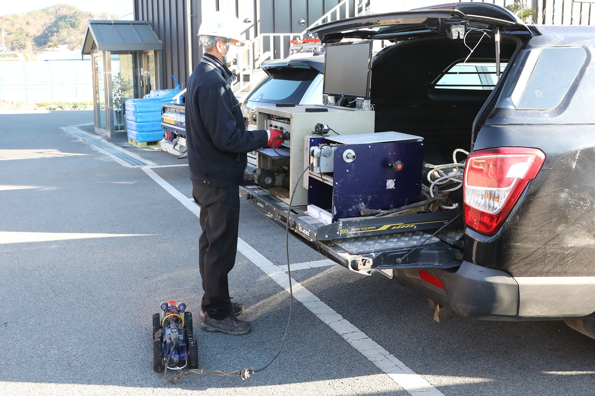
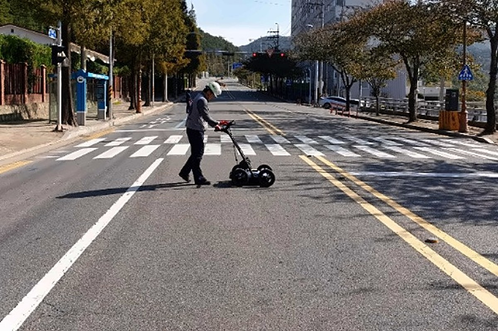
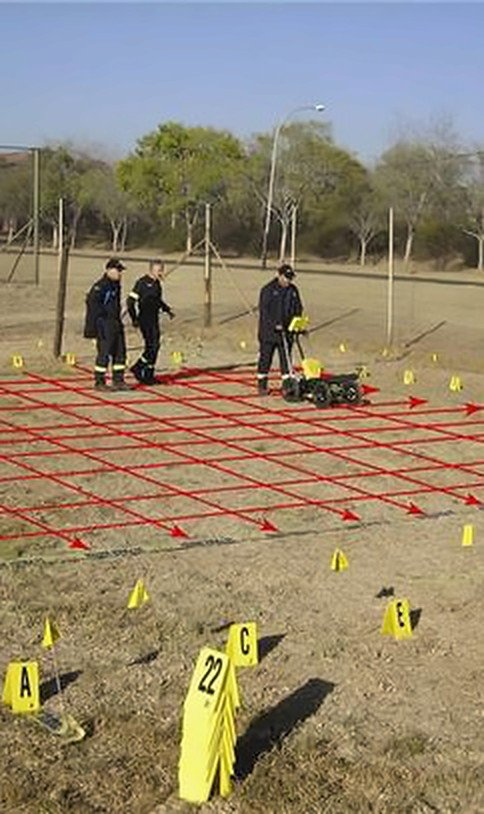
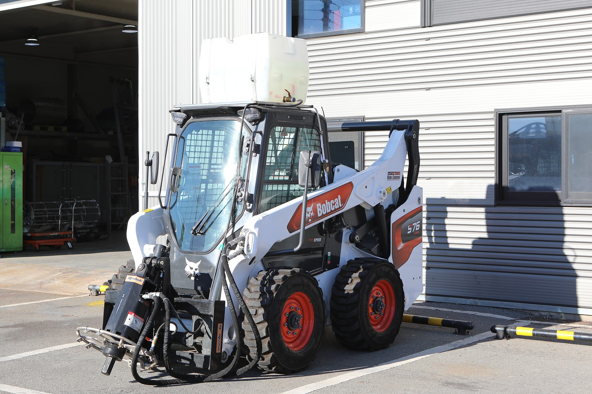

05조사 · 보수
관로·지하 조사 및 보수
관로 내부 CCTV 조사, 지하매설물 GPR 조사, 비굴착 보수를 수행합니다. CCTV 조사차량(D=250~600mm)과 관로 CCTV 로봇을 보유하고 있으며, 하수관거 CCTV 조사를 1년간(2022.01~2022.12) 수행했습니다.
- 작업 범위
- 관로 CCTV 조사
- 지하매설물 GPR 조사
- 비굴착 보수
- 주요 장비
- CCTV 조사차량(D=250~600mm) · 관로 CCTV 로봇 · 스키드 로더
- 투입 로봇
- 관로 CCTV 로봇
- 문의 시
- 대상 구간 · 조사·보수 목적 · 보유 자료 · 희망 일정
05관로·지하 조사 및 보수작업 방식
조사부터 보수까지
세 가지 업무와 그때 쓰는 장비



02지하매설물 GPR 조사
지하매설물을 대상으로 하는 GPR 조사 업무입니다.

03비굴착 보수
굴착 없이 진행하는 관로 보수 관련 업무입니다.
스키드 로더 (맨홀 보수)
회사소개서(2024) 9쪽 주요사업 안내 · 22~24쪽 보유 장비
05관로·지하 조사 및 보수보유 장비
조사 · 보수 장비
CCTV 조사차량과 관로 CCTV 로봇으로 관로 내부를 조사합니다. 맨홀 보수에는 스키드 로더를 씁니다.
회사소개서(2024) 21~24쪽 보유 장비
| 장비 | 규격 | 용도 | 보유 |
|---|---|---|---|
| CCTV 조사차량 | D=250~600mm | 관로 조사 | 2대 |
| 관로 CCTV 로봇 | — | 관로 조사 | 1대 |
| 탈취제거 SYSTEM | — | 관로 조사 | 1SET |
| 스키드 로더 | — | 맨홀 보수 작업 | 1대 |
05관로·지하 조사 및 보수알아 두실 점
05관로·지하 조사 및 보수
관로 조사나 보수가 필요하신가요?
대상 구간 · 조사·보수 목적 · 보유 자료 · 희망 일정 등을 알려 주시면 가능한 작업 범위와 진행 방법을 안내해 드립니다.